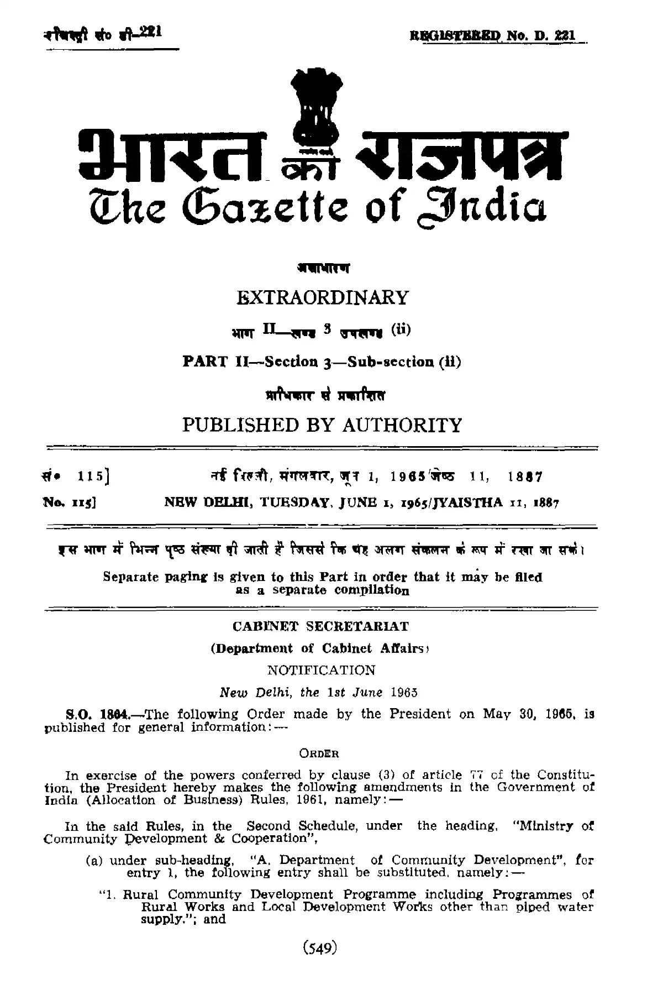
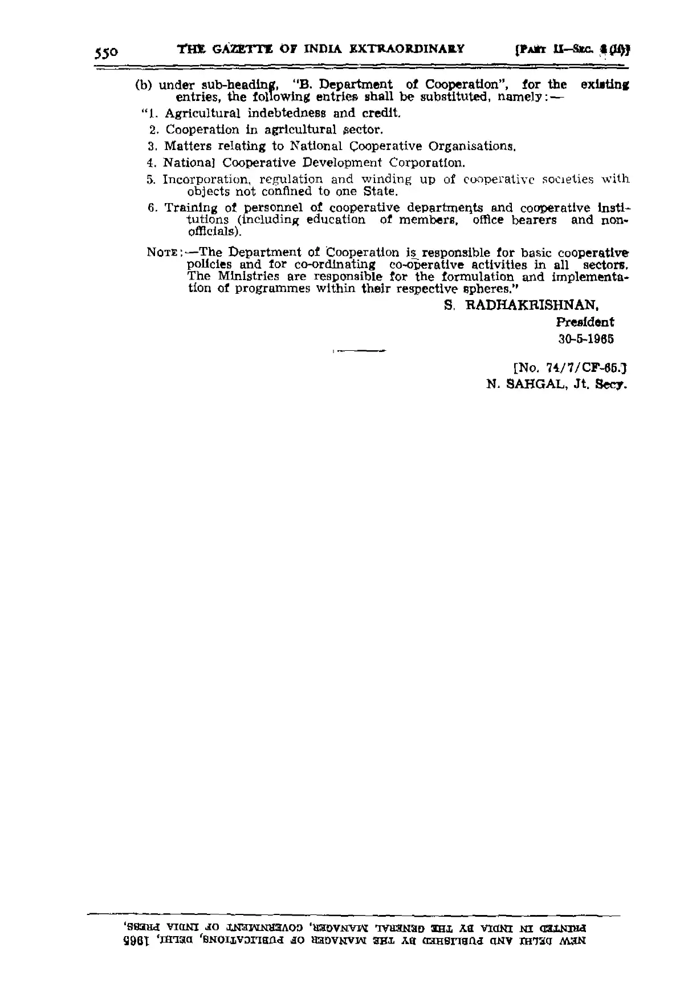

Amendment #40 (S.O. 1804, 1965)
2 changes: 0 to the First Schedule, 2 to the Second Schedule. 1 applied1 not applied
The order, page by page
Page 1 of 2

1Schedule 2 › Ministry of Community Development & Cooperation › Department of Community Development › entry 1
- 1. Rural Community Development Programme including Programmes of Rural Works and Local Development Works other than plped water supply.
not applied (the change could not be placed in the Rules as read; see How this document was read)
Page 2 of 2

2Schedule 2 › Ministry of Community Development & Cooperation › Department of Cooperation
- 1. Agricultural indebtedness and credit.
- 2. Cooperation in agricultural sector.
- 3. Matters relating to National Cooperative Organisations
- 4. National Cooperative Development Corporation.
- 5. Incorporation, regulation and winding up of cooperative societies with objects not confined to one State.
- 6. Training of personnel of cooperative departments and cooperative institutions (including education of members, office bearers and nonofficials).
and 1 more
- NOTE: The Department of Cooperation is responsible for basic cooperative policies and for co-ordinating co-operative activities in all sectors The Ministries are responsible for the formulation and implementation of programmes within their respective spheres.
applied at schedule 2 › ministry MINISTRY OF COMMUNITY DEVELOPMENT & COOPERATION › department B in the Rules after #40
How this document was read
Known issues
| Change | Issue | Known as |
|---|---|---|
| 1 | change 1: no entry 1 under schedule 2 › ministry MINISTRY OF COMMUNITY DEVELOPMENT & COOPERATION › department A | Entries not in the state |
From the Government of India (Allocation of Business) Rules, 1961 and their amendments, as published by the Cabinet Secretariat (cabsec.gov.in), read by orgpedia. The readings of the older scanned gazettes have known gaps.